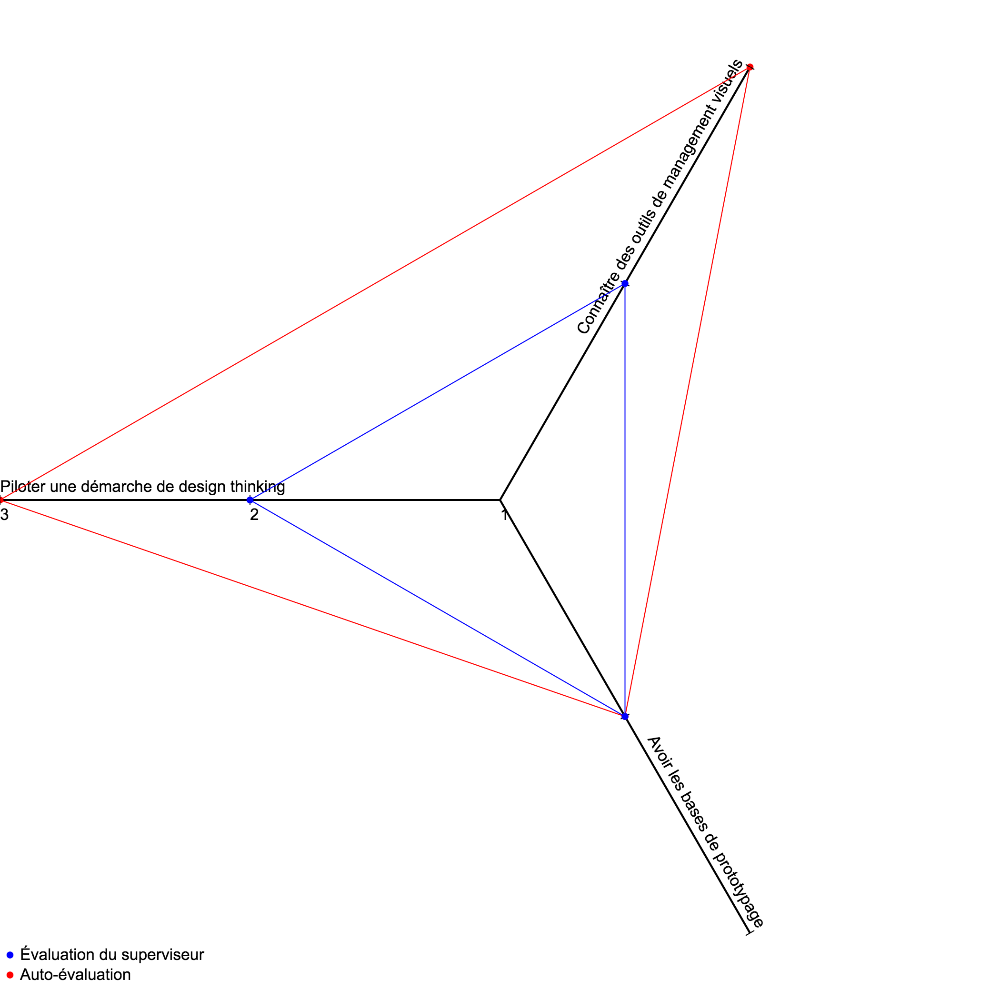
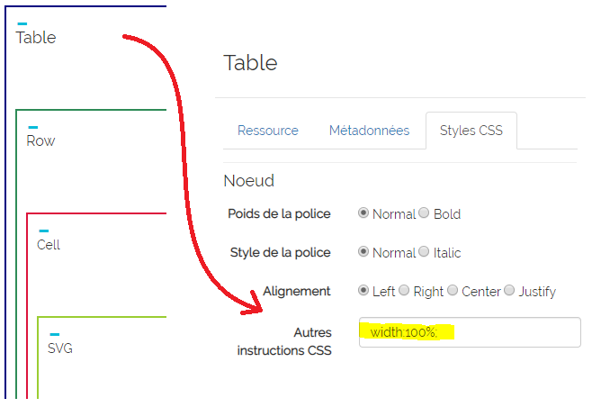
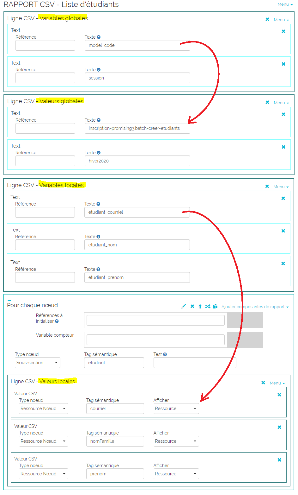

Fonctionnement
Ensemble de commandes de script permettant de construire des rapports. Les rapports présentent
habituellement des données puisées dans un ou plusieurs portfolios.
Il y a trois façons d'exécuter un script de rapport :
- avec la ressource Tableau de bord dans un portfolio (le plus souvent),
-
à partir de la page Exécuter un script de rapport en spécifiant le code du portfolio contenant
le script de rapport,
-
à partir de la page Exécuter un script de rapport en téléversant un fichier CSV (pour le format
du fichier CSV voir la page Batch de cette documentation). Dans le fichier CSV, les 2 premières
lignes (variables globales) ne sont pas prises en compte.
Commandes
Éléments de construction de tableau
Éléments d'affichage
Boucles
Instructions
Variables et opérations
Composantes SVG

Table
Dessine un élément HTML table.
Champ à renseigner :
-
Références à initialiser Optionnel : liste des variables (séparées par une barre
oblique) à réinitialiser. La variable peut avoir été déclarée précédement dans une autre commande
ou peut être déclarée pour la première fois.
Rangée
Dessine un élément HTML row.
Champ à renseigner :
-
Références à initialiser Optionnel : liste des variables (séparées par une barre
oblique) à réinitialiser. La variable peut avoir été déclarée précédement dans une autre commande
ou peut être déclarée pour la première fois.
Cellule
Dessine un élément HTML cell. Contient habituellement un élément d'affichage (ou un
élément Table, pour former des tableaux complexes).
Champ à renseigner :
-
colspan Optionnel : permet de spécifier l'attribut HTML colspan d'une cellule de tableau,
soit le nombre de colonnes sur lesquelles s'étend la cellule.
Texte
Permet d'afficher du texte "programmé en dur" ie : texte fixe qui ne dépend pas des valeurs
dans le portfolio (par exemple les titres de colonnes). Habituellement utilisé dans un élément
Cellule.
Champs à renseigner :
Référence Optionnel : si utilisé,
la variable enregistre la valeur obtenue par l'attribut Texte.
Texte Le texte à afficher.
Nœud
Permet de puiser la valeur à afficher d'un élément de portfolio (par exemple la valeur entrée par l'utilisateur
dans un élément Ressource). Habituellement utilisé dans un élément Cellule.
Champs à renseigner :
Référence Optionnel : si utilisé, la variable enregistre la valeur affichée.
-
Type nœud Type de l'élément à sélectionner. Les options sont : root, section, page,
sous-section ou nœud ressource.
Tag sémantique Tag sémantique de l'élément à sélectionner.-
Afficher Valeur du nœud sélectionné à afficher. Les
options sont : libellé du nœud, valeur de la ressource, code du nœud, code d'un élément Item,
commentaires sur le nœud, valeur d'un élément Item ou UUID du nœud.
URL2Unit
Permet d'insérer dans le tableau un lien vers une page du portfolio. Le portfolio ne doit contenir qu'une
seule page avec le tag sémantique spécifié. Habituellement utilisé à l'intérieur d'un élément Cellule.
Champ à renseigner :
Tag sémantique Tag sémantique de la page vers laquelle pointe le lien.
Afficher les partages
Permet d'afficher les usagers qui sont partagés avec un portfolio (avec les rôles des partages).
Habituellement utilisé à l'intérieur d'un élément Cellule.
Code QR
Permet d'afficher le code QR qui mène au BubbleMap contenu dans un portfolio.
L'élément BubbleMap est trouvé automatiquement par Karuta (le portfolio ne doit pas contenir plus d'un élément BubbleMap).
Habituellement utilisé à l'intérieur d'un élément Cellule.
Europass
Permet d'afficher l'Europass contenu dans un portfolio.
L'élément Europass est trouvé automatiquement par Karuta (le portfolio ne doit pas contenir plus d'un élément Europass).
Comme l'Europass comprends sa propre mise en tableau, il n'est pas nécessaire de placer cet élément à l'intérieur d'un
élément Cellule.
Login utilisateur
Permet d'afficher le login (identifiant) de l'utilisateur qui exécute le report (par exemple, l'étudiant qui regarde
son propre portfolio).
Prénom utilisateur
Permet d'afficher le prénom de l'utilisateur qui exécute le report (par exemple, l'étudiant qui regarde son
propre portfolio).
Nom famille utilisateur
Permet d'afficher le nom de famille de l'utilisateur qui exécute le report (par exemple, l'étudiant qui regarde son
propre portfolio).
Prénom et nom famille
Permet d'afficher le prénom et le nom de famille de l'utilisateur qui exécute le report (par exemple, l'étudiant
qui regarde son propre portfolio).
Pour chaque nœud
Les commandes qui se trouvent à l'intérieur de cet élément sont exécutées pour chacun des
éléments du portfolio qui répondent aux critères Type de nœud,
Tag sémantique et Test.
Champs à renseigner :
-
Références à initialiser Optionnel : liste des variables (séparées par une barre
oblique) à réinitialiser pour chaque nouvel élément. La variable peut avoir été déclarée
précédement dans une autre commande ou peut être déclarée pour la première fois.
-
Variable compteur Optionnel : permet de déclarer une variable compteur qui est incrémentée
à chaque tour de la boucle et peut être utilisée à l'intérieur de celle-ci.
-
Type nœud Type des éléments à sélectionner (liste déroulante des choix
possibles).
-
Tag sémantique Tag sémantique des éléments à sélectionner.
-
Test Optionnel : test jQuery permettant de filtrer parmis les éléments répondant
aux deux critères précédents. Si pas utilisé, tous les nœuds qui répondent aux deux critères
précédents sont traités.
Tests prédéfinis :
-
.sort() Trie la liste des nœuds résultats sur le libellé, en ordre croissant.
-
.invsort() Trie la liste des nœuds résultats sur le libellé, en ordre décroissant.
-
.sortResource() Trie la liste des nœuds résultats sur la ressource, en ordre croissant.
-
.invsortResource() Trie la liste des nœuds résultats sur la ressource, en ordre décroissant.
-
.sortUTC() Trie une liste d'éléments Calendrier sur la date, en format international (peu
importe le format d'affichage choisi dans l'élément Calendrier).
-
.invsortUTC() Trie une liste d'éléments Calendrier sur la date, en format international (peu
importe le format d'affichage choisi dans l'élément Calendrier).
-
.filename_not_empty() S'applique aux éléments Document et vérifie si un fichier
a été téléversé dans l'élément (vérifie que l'élément n'est pas vide).
-
.filename_empty() S'applique aux éléments Document et vérifie si un fichier
a été téléversé dans l'élément (vérifie que l'élément est vide).
-
.url_not_empty() S'applique aux éléments URL et vérifie si un hyperlien a été
enregistré (vérifie que l'élément n'est pas vide).
-
.url_empty() S'applique aux éléments URL et vérifie si un hyperlien a été
enregistré (vérifie que l'élément est vide).
-
.code_not_empty() S'applique aux éléments Ressource et indique que le
code existe (vérifie que le code n'est pas vide).
-
.code_empty() S'applique aux éléments Ressource et indique que le
code n'existe pas (vérifie que le code est vide).
-
.text_not_empty() S'applique aux éléments Texte court et Texte long et vérifie
si du texte a été enregistré dans la Ressource (vérifie que l'élément n'est pas vide).
-
.text_empty() S'applique aux éléments Texte court et Texte long et vérifie
si du texte a été enregistré dans la Ressource (vérifie que l'élément est vide).
-
.submitted() Vérifie l'élément a été soumis.
Les tests prédéfinis peuvent être combinés. Par exemple :
.sort().first() retournera le premier élément de la liste triée.
Exemples de fonctions jQuery :
.first() Retourne le premier élément de la liste résultat..not(':eq(0)') Retourne la liste sauf le premier élément..last() Retourne le dernier élément de la liste résultat..has("code:contains('2')") Sélectionne les éléments dont le code contient un "2".-
.siblings().has("metadata[semantictag*=job-title]") Retourne la liste des éléments
de même niveau (dans l'arborescence XML) contenant le tag sémantique "job-title".
-
.has("metadata-wad[submitted='Y']").last() Retourne le dernier élément ayant été
soumis.
-
.has("metadata-wad[private='N']").last() Retourne le dernier élément qui est visible.
-
.has('asmContext:has("metadata[semantictag*=visibility-cv-short]"):has
("code:contains(@1)")')
Retourne un élément si celui-ci a un enfant avec le tag sémantique "visibility-cv-short" et
dont le code contient "@1".
-
.sortElements(function(a, b){ return $("code",$("asmResource[xsi_type=Get_Resource]",a))
.text() > $("code",$("asmResource[xsi_type=Get_Resource]",b)).text() ? 1 : -1; })
Trie sur le code du Get_Resource.
Pour chaque portfolio
Les commandes qui se trouvent à l'intérieur de cet élément sont exécutées pour chacun des
portfolios répondant au test Sélection portfolios.
Champs à renseigner :
-
Références à initialiser Optionnel : liste des variables (séparées par une barre
oblique) à réinitialiser pour chaque nouveau portfolio. La variable peut avoir été déclarée
précédement dans une autre commande ou peut être déclarée pour la première fois ici.
-
Variable compteur Optionnel : permet de déclarer une variable compteur qui est incrémentée
à chaque tour de la boucle et peut être utilisée à l'intérieur de celle-ci.
-
Sélection portfolios Test jQuery permettant de sélectionner des portfolios parmi
ceux visibles par l'usager. Exemples :
-
code*='2015_work' Sélection des portfolios dont le code contient
"2015_work".
-
code*=portfolio_code Sélection des portfolios dont le code contient le
contenu de la variable porfolio_code.
-
Tri - Tag sémantique Optionnel : tag sémantique du nœud sur lequel doit
se faire le tri des portfolios. Si pas utilisé, les portfolios sortent dans l'ordre naturel
des codes de portfolio.
-
Tri - Élément Valeur du nœud sélectionné à partir de laquelle
faire le tri. Les options sont : libellé du nœud, valeur de la ressource, code du nœud
ou valeur d'un élément Item (liste déroulante des choix possibles).
Pour chaque nœud de portfolio
Les commandes qui se trouvent à l'intérieur de cet élément sont exécutées pour chacun des
portfolios répondant au test Sélection portfolios. Contrairement à la commande
précédente, ce n'est pas tout le portfolio qui est chargé mais uniquement le nœud spécifié
dans Tag sémantique. Ceci permet une exécution plus rapide dans le cas de gros
portfolios.
Champs à renseigner :
-
Références à initialiser Optionnel : liste des variables (séparées par une barre
oblique) à réinitialiser pour chaque nouveau portfolio. La variable peut avoir été déclarée
précédement dans une autre commande ou peut être déclarée pour la première fois.
-
Variable compteur Optionnel : permet de déclarer une variable compteur qui est incrémentée
à chaque tour de la boucle et peut être utilisée à l'intérieur de celle-ci.
-
Sélection portfolios Test jQuery permetant de sélectionner des portfolios parmi
ceux visibles par l'usager. Exemples :
-
code*='2015_work' Sélection des portfolios dont le code contient
"2015_work".
-
code*=portfolio_code Sélection des portfolios dont le code contient
le contenu de la variable porfolio_code.
-
Tri - Tag sémantique Optionnel : tag sémantique du nœud sur lequel doit
se faire le tri des portfolios. Si pas utilisé, les portfolios sortent dans l'ordre naturel
des codes de portfolio.
-
Tri - Élément Valeur du nœud sélectionné à partir de laquelle faire le tri.
Les options sont : libellé du nœud, valeur de la ressource, code du nœud ou valeur d'un
élément Item (liste déroulante des choix possibles).
-
Tag sémantique Tag sémantique du ou des nœuds du portfolio à charger pour
l'exécution.
Pour chaque ligne
Les commandes qui se trouvent à l'intérieur de cet élément sont exécutées pour chacune des
lignes du fichier CSV. Cet élément doit contenir au moins un des trois éléments suivants :
Pour chaque personne, Pour chaque portfolio ou Pour chaque nœud de portfolio.
Pour un élément ForEachPerson : dans l'attribut Sélection personnes,
si la valeur est "username=identifiant" (sans guillemets), Karuta remplacera "identifiant"
par la valeur de la variable locale identifiant du fichier CSV.
Pour un élément ForEachPortfolio ou ForEachPortfolioNode :
dans l'attribut Sélection portfolios, si la valeur est "code=portfolio_code"
(sans guillemets), Karuta remplacera "portfolio_code" par la valeur de la variable locale
portfolio_code du fichier CSV.
Boucle
Permet d'implémenter une boucle de type "for i = x..y". Les commandes à l'intérieur de la boucle seront
exécutées pour le nombre d'itérations contenues entre Premier et Dernier.
Champs à renseigner :
-
Références à initialiser Optionnel : liste des variables (séparées par une barre
oblique) à réinitialiser pour chaque nouveau portfolio. La variable peut avoir été déclarée
précédement dans une autre commande ou peut être déclarée pour la première fois.
-
Variable compteur Optionnel : permet de déclarer une variable compteur qui est incrémentée
à chaque tour de la boucle et peut être utilisée à l'intérieur de celle-ci.
-
Premier Première itération de la boucle (habituellement 1).
-
Dernier Dernière itération de la boucle (peut être une valeur, une variable, la longueur d'un
tableau de références, etc).
Monter au parent
Permet de remonter au parent du nœud courrant dans l'arbre XML. Peut être utilisé imbriqués un dans l'autre
pour remonter jusqu'à la racine du portfolio.
Si Alors Sinon
Permet d'implémenter une instruction conditionnelle de type "if-then-else".
Champ à renseigner :
-
Test test javascript ou jQuery qui détermine si ce sont les actions du alors ou les actions du sinon
qui seront exécutées (doit retourner vrai ou faux).
Variable
Permet de déclarer une variable et de lui assigner une valeur initiale.
Champs à renseigner :
Référence Optionnel : si utilisé,
la référence enregistre la valeur initiale assignée à la variable.
-
Nom de la variable nom de la variable.
Il y a cinq méthodes pour l'assignation de la valeur initiale :
-
Valeur du nœud Permet de puiser la valeur de la variable d'un élément de portfolio (par exemple la valeur
entrée par l'utilisateur dans un élément Ressource). Voir élément d'affichage Nœud.
-
Valeur par aggrégat Permet d'assigner à la variable la somme ou la moyenne des valeurs contenues dans
une Référence. Voir élément Agrégat.
-
Valeur par opération Permet d'assigner à la variable le résultat d'une opération.
Voir élément Opération.
-
Champ valeur Permet d'assigner une valeur "programmée en dur" ie : texte fixe qui ne dépend pas des
valeurs dans le portfolio. Équivalent de l'élément d'affichage Texte.
Autre variable Permet d'assigner la valeur d'une autre variable.
Agrégat
Permet d'afficher la somme ou la moyenne des valeurs contenues dans une variable Référence. La
Référence a précédemment été déclarée dans l'attribut Références à initialiser
d'un élément Table, Rangée ou d'une boucle, et a collecté les valeurs des éléments où elle est référencée
(attribut Référence). Elle est habituellement référencée dans un élément Nœud (ou Texte).
Référence dans un élément Nœud : Fonctionne uniquement avec
la Valeur d'un élément Item (Item - Valeur).
Référence dans un élément Text : doit contenir uniquement
une valeur numérique.
Champs à renseigner :
-
Référence Optionnel : si utilisé, la variable enregistre la valeur résultante de l'agrégation.
Type agrégation Somme ou moyenne (liste déroulante des choix possibles).Sélection référence Nom de la variable qui contient les valeurs à agréger.
Opération
Permet d'afficher le résultat d'une opération arithmétique.
Champs à renseigner :
-
Référence Optionnel : si utilisé, la variable enregistre la valeur résultante de l'opération.
-
Type d'opération Addition, division, multiplication, pourcentage ou soustraction
(liste déroulante des choix possibles).
Opérande 1 Premier opérande de l'opération.Opérande 2 Deuxième opérande de l'opération.
SVG
Initialise un dessin vectoriel SVG. Les commandes de dessin disponibles permettent de construire des diagrammes
en étoile tel qu'illustré ci-dessous :

Note importante : l'élément Table qui contient l'élément SVG doit avoir l'instruction "width:100%;" dans
le champ "Autre CSS" de l'onglet "CSS" :

Champs à renseigner :
Largeur minimale Largeur minimale (par défaut 100%).Hauteur minimale Hauteur minimale (par défaut 500px).
Titre SVG
Affiche le titre du dessin SVG.
Champs à renseigner :
-
Titre - Type nœud Type de l'élément à sélectionner (liste déroulante des choix
possibles).
Titre - Tag sémantique Tag sémantique de l'élément à sélectionner.-
Titre - Afficher Valeur du nœud sélectionné à afficher (liste déroulante des choix possibles). Les
options sont : libellé du nœud, valeur de la ressource, code du nœud, commentaires sur le nœud, UUID
du nœud, code d'un élément Item ou valeur d'un élément Item.
Axe SVG
Trace les axes de l'étoile, avec leurs libellés.
Champs à renseigner :
Référence Optionnel : si utilisé,
la variable enregistre la valeur obtenue par l'attribut Afficher.
-
Axe - Type nœud Type de l'élément à sélectionner (liste déroulante des choix
possibles).
Axe - Tag sémantique Tag sémantique de l'élément à sélectionner.-
Axe - Afficher Valeur du nœud sélectionné à afficher (liste déroulante des choix possibles). Les
options sont : libellé du nœud, valeur de la ressource, code du nœud, commentaires sur le nœud, UUID
du nœud, code d'un élément Item ou valeur d'un élément Item.
Courbe SVG
Place les points sur les axes et trace une ligne entre les points (pour former l'étoile). Affiche également
la légende de l'élément SVG. Il est possible d'utiliser plusieurs éléments Courbe SVG dans le même élément
SVG. Les étoiles seront superposées sur les mêmes axes avec des couleurs différentes.
Champs à renseigner pour placer les points sur les axes :
Référence Optionnel : si utilisé,
la variable enregistre la valeur obtenue par l'attribut Afficher.
-
Points - Type nœud Type de l'élément à sélectionner (liste déroulante des choix
possibles).
Points - Tag sémantique Tag sémantique de l'élément à sélectionner.-
Points - Afficher Valeur du nœud sélectionné à afficher (liste déroulante des choix possibles). Les
options sont : libellé du nœud, valeur de la ressource, code du nœud, commentaires sur le nœud, UUID
du nœud, code d'un élément Item ou valeur d'un élément Item.
Champs à renseigner pour la graduation des axes :
Axe - Valeur minimale Valeur inférieure pour la graduation des axes.Axe - Valeur maximale Valeur supérieure pour la graduation des axes.
Champs à renseigner pour construire la légende :
-
Légende - Type nœud Type de l'élément à sélectionner (liste déroulante
des choix possibles).
Légende - Tag sémantique Tag sémantique de l'élément à sélectionner.
-
Légende - Afficher Valeur du nœud sélectionné à afficher dans la légende.
Les options sont : libellé du nœud, valeur de la ressource, code du nœud ou
valeur d'un élément Item (liste déroulante des choix possibles).
-
Légende - Position Entier donnant la position relative de la légende
(par défaut 0, ce qui positionne la légende au plus bas).
Commandes CSV
Les commandes CSV sont utilisées avec la fonction execReport_BatchCSV. Cette fonction permet de créer en
mémoire un fichier CSV temporaire qui est passé en paramètre à un batch. Autrement dit, un fichier CSV est
construit à partir d'un portfolio puis fournit à un script de batch. Une fois la fonction exécutée le fichier
n'est pas conservé.
Exemple de script de rapport :

Exemple de fichier temporaire résultant :

Ligne CSV
Ajoute une ligne au fichier CSV temporaire. Il faut ensuite remplir les colonnes de la ligne, habituellement
avec une combinaison d'éléments Texte (pour les valeur "en dur") et d'éléments Valeur CSV (pour tirer des
valeurs du portfolio).
Valeur CSV
Équivalent de l'élément d'affichage Nœud pour écrire dans un fichier CSV.
Champs à renseigner :
Type nœud Type de l'élément à sélectionner (liste déroulante des choix possibles).Tag sémantique Tag sémantique de l'élément à sélectionner.-
Afficher Valeur du nœud sélectionné à afficher (liste déroulante des choix possibles). Les
options sont : libellé du nœud, valeur de la ressource, code du nœud, commentaires sur le nœud, UUID
du nœud, code d'un élément Item ou valeur d'un élément Item.